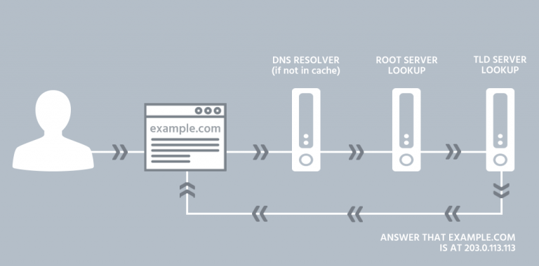
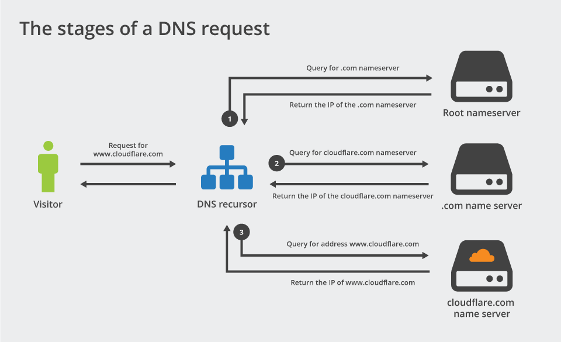
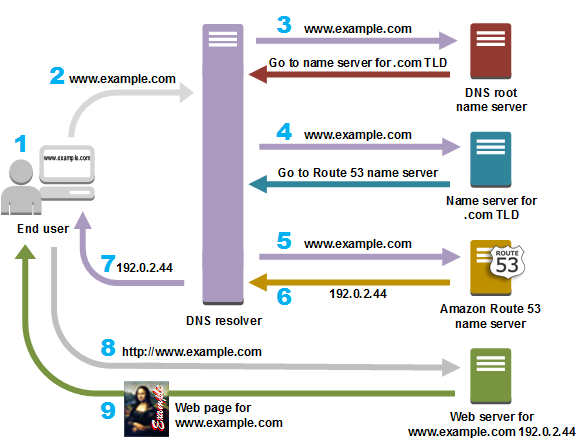

Devops Interview Prep
DNS - Cheat-sheet
The route, step by step
- Browser parses the URL The browser extracts the scheme, hostname, port and path from the URL, for example https://www.example.com:443/path.
- Browser cache and internal optimizations The browser first checks its own DNS cache and connection cache. If it already has a valid IP and an open connection, it may reuse it.
- Hosts file and OS-level caches If browser cache misses, the OS is asked. The OS checks the hosts file (
/etc/hostson Linux/macOS,C:\Windows\System32\drivers\etc\hostson Windows) and any local DNS cache (e.g.,systemd-resolved,nscd, or Windows DNS cache). - The stub resolver sends a DNS query The OS stub resolver sends the query to the configured recursive resolver. That resolver is usually provided by DHCP, e.g., your router, your ISP, or a public resolver like 1.1.1.1 or 8.8.8.8. Modern setups may use DNS over HTTPS or DNS over TLS, but logically it is still "ask a resolver".
- Recursive resolver resolves the name, possibly iteratively If the recursive resolver has the answer cached, it returns it.
- If not, it performs iterative resolution:
- Ask a root server for the TLD nameservers.
- Ask the TLD server for the authoritative nameserver for the domain.
- Ask the authoritative nameserver for the A and AAAA records.
- During this it will handle CNAME chains, follow glue records, and respect DNSSEC if configured.
- Resolver returns A/AAAA records, sometimes multiple IPs The answer can contain multiple IPs, CNAMEs, TTL values, MX or SRV records if requested. TTL tells caches how long to keep the entry.
- Browser / OS selects an IP and starts connecting The browser chooses an IP (often the first or based on ordering), resolves port, and opens a socket. If the IP is on the same LAN, ARP or Neighbor Discovery resolves the link-layer address. Otherwise the packet goes to the default gateway and is routed through the internet.
- Anycast, CDNs and dynamic DNS changes If the name maps to a CDN or load-balancer, the authoritative DNS often returns Anycast IPs or region-specific answers, so different clients may get different IPs. That is how CDNs route you to a nearby edge server.

Common gotchas and how to debug quickly
- Hosts file overrides everything. Check it first.
- DNS caching hides changes until TTL expires.
- CNAME chains add additional lookups and latency.
- CDNs and Anycast mean the same hostname can resolve to different IPs around the world.
- DNS over HTTPS/TLS changes where the query goes, not the logical steps.
Useful commands
Check what your system sees:
# Linux/macOS
getent hosts www.example.com
dig +short www.example.com
dig +trace www.example.com # show the iterative resolution path
nslookup www.example.com 1.1.1.1 # query a specific resolver
# Windows (PowerShell)
Resolve-DnsName www.example.com
ipconfig /displaydns
ipconfig /flushdns # flush Windows DNS cache
If you want to see the authoritative answers and CNAMEs:
dig www.example.com @8.8.8.8 +nocmd +noall +answer +authority +additional
If you suspect CDN/Anycast routing issues, run traceroutes:
traceroute www.example.com # Linux/macOS
tracert www.example.com # Windows
Quick checklist to trace a failure
- Check browser DNS cache and try in an incognito window.
- Check hosts file.
- Run
dig +traceto follow resolution. - Query a public resolver like 1.1.1.1 to compare results.
- Trace route to the returned IP to see where packets go.
That’s the full route, in plain terms. If you want, I can walk you through a live example with a domain you pick, show
dig +trace, and explain each hop.DNS Records
Record | Meaning | Short Explanation / Example / Use Case |
|---|---|---|
A | Address | |
AAAA | IPv6 Address | Maps a domain to an IPv6 address. Example: example.com → 2606:2800:220:1:248:1893:25c8:1946. |
CNAME | Canonical Name | |
MX | Mail Exchange | Specifies mail servers for email delivery. Example: 10 mail1.example.com. |
TXT | Text | Stores arbitrary text, often for verification or SPF records. Example: "v=spf1 include:_spf.google.com ~all". |
NS | Name Server | Lists authoritative DNS servers for a domain. Example: ns1.example.com. |
PTR | Pointer | |
SRV | Service Locator | Specifies host/port for services. Example: _sip._tcp.example.com. |
SOA | Start of Authority | Contains admin info, serial number, refresh timers for a zone. |
CAA | Certificate Authority Authorization | Restricts which CAs can issue certificates for the domain. |
NAPTR | Naming Authority Pointer | Used in VoIP/DNS-based service discovery. Example: ENUM for phone numbers. |
Deep Dive
- https://www.youtube.com/watch?v=mpQZVYPuDGU&ab_channel=PowerCertAnimatedVideos
- https://www.youtube.com/watch?v=uOfonONtIuk&ab_channel=Computerphile
- https://www.youtube.com/watch?v=FsGUi5pXpLk&ab_channel=CertBros



- Most common types of DNS record?
- A record - The record that holds the IP address of a domain. Learn more about the A record.
- AAAA record - The record that contains the IPv6 address for a domain (as opposed to A records, which list the IPv4 address). Learn more about the AAAA record.
- CNAME record - Forwards one domain or subdomain to another domain, does NOT provide an IP address. Learn more about the CNAME record.
- MX record - Directs mail to an email server. Learn more about the MX record.
- TXT record - Lets an admin store text notes in the record. These records are often used for email security. Learn more about the TXT record.
- NS record - Stores the name server for a DNS entry. Learn more about the NS record.
- SOA record - Stores admin information about a domain. Learn more about the SOA record.
- SRV record - Specifies a port for specific services. Learn more about the SRV record.
- PTR record - Provides a domain name in reverse-lookups. Learn more about the PTR record.
- CNAME
- CNAME (Canonical Name) record
- https://www.youtube.com/watch?v=ZXCQwdVgDno&ab_channel=TonyTeachesTech
- a type of DNS record that maps an alias name to a true or canonical domain name. CNAME records are typically used to map a subdomain such as www or mail to the domain hosting that subdomain's content.
- The ‘canonical name’ (CNAME) record is used in lieu of an A record, when a domain or subdomain is an alias of another domain. All CNAME records must point to a domain, never to an IP address. Imagine a scavenger hunt where each clue points to another clue, and the final clue points to the treasure. A domain with a CNAME record is like a clue that can point you to another clue (another domain with a CNAME record) or to the treasure (a domain with an A record).
- For example, suppose blog.example.com has a CNAME record with a value of ‘example.com’ (without the ‘blog’). This means when a DNS server hits the DNS records for blog.example.com, it actually triggers another DNS lookup to example.com, returning example.com’s IP address via its A record. In this case we would say that example.com is the canonical name (or true name) of blog.example.com.
- Oftentimes, when sites have subdomains such as blog.example.com or shop.example.com, those subdomains will have CNAME records that point to a root domain (example.com). This way if the IP address of the host changes, only the DNS A record for the root domain needs to be updated and all the CNAME records will follow along with whatever changes are made to the root.
- A frequent misconception is that a CNAME record must always resolve to the same website as the domain it points to, but this is not the case. The CNAME record only points the client to the same IP address as the root domain. Once the client hits that IP address, the web server will still handle the URL accordingly. So for instance, blog.example.com might have a CNAME that points to example.com, directing the client to example.com’s IP address. But when the client actually connects to that IP address, the web server will look at the URL, see that it is blog.example.com, and deliver the blog page rather than the home page
- DNS TXT record
- The DNS ‘text’ (TXT) record lets a domain administrator enter text into the Domain Name System (DNS). The TXT record was originally intended as a place for human-readable notes. However, now it is also possible to put some machine-readable data into TXT records. One domain can have many TXT records.
- Today, two of the most important uses for DNS TXT records are email spam prevention and domain ownership verification, although TXT records were not designed for these uses originally.
- Spammers often try to fake or forge the domains from which they send their email messages. TXT records are a key component of several different email authentication methods that help an email server determine if a message is from a trusted source.
- Common email authentication methods include Domain Keys Identified Mail (DKIM), Sender Policy Framework (SPF), and Domain-based Message Authentication, Reporting & Conformance (DMARC). By configuring these records, domain operators can make it more difficult for spammers to spoof their domains and can track attempts to do so.
- SPF records: SPF TXT records list all the servers that are authorized to send email messages from a domain.Here's how SPF works:
- Authentication: SPF allows domain owners to specify which IP addresses or servers are authorized to send emails on behalf of their domain. This authentication mechanism helps verify that the sending server is legitimate and authorized by the domain owner.
- Checking Sender's IP: When an email is received, the recipient's mail server can check the SPF record of the sender's domain to verify if the sending server's IP address is allowed to send emails for that domain.
- SPF Policy: The SPF record defines a policy that specifies whether the email should be accepted, rejected, or marked as suspicious based on the match or mismatch of the sender's IP address with the authorized servers listed in the record.
- Actions on Policy Evaluation: The recipient's mail server takes action based on the SPF policy evaluation. If the SPF check fails (e.g., the sending server's IP address is not authorized), the server can reject the email, mark it as spam, or apply a different action based on the policy configuration.
- DKIM records: DKIM works by digitally signing each email using a public-private key pair. This helps verify that the email is actually from the domain it claims to be from. The public key is hosted in a TXT record associated with the domain. (Learn more about public key encryption.)
- DMARC records: A DMARC TXT record references the domain's SPF and DKIM policies. It should be stored under the title _dmarc.example.com. with 'example.com' replaced with the actual domain name. The 'value' of the record is the domain's DMARC policy (a guide to creating one can be found here).
- While domain ownership verification was not initially a feature of TXT records, this approach has been adopted by some webmaster tools and cloud providers.
- By uploading a new TXT record with specific information included, or editing the current TXT record, an administrator can prove they control that domain. The tool or cloud provider can check the TXT record and see that it has been changed as requested. This is somewhat like when a user confirms their email address by opening and clicking a link sent to that email, proving they own the address.
- DNS zone
- A DNS zone is a distinct part of the domain namespace which is delegated to a legal entity, such as a person, organization, or company, who is responsible for maintaining the DNS zone
- It is an administrative subdivision of the DNS namespace that allows for more granular control of DNS components, such as authoritative nameserver
- A DNS zone file is a text-based file that is stored on a DNS name server and contains information about mappings between IP addresses, domain names, and other resources, organized in the form of resource records (RR)
- There are two mandatory records which are included at the start of any DNS zone file: Start of Authority (SOA) and Name Server (NS)
- DNS zones are not necessarily physically isolated from each other; they are used for delegating administrative functions and enabling granular control of DNS components
- The DNS is broken up into several different zones called DNS zones, which are implemented in the configuration system of a domain name server
- Each level of the DNS namespace can be a DNS zone, and a zone always starts at a domain boundary to include all leaf nodes (hosts) in the domain, or it ends at the boundary of another independently managed zone
- Let's consider the domain "example.com" and its DNS zones and parent zones:
- DNS Zones:
- "example.com" Zone: This is the main DNS zone for the domain "example.com". It contains DNS records specific to this domain, such as A records, MX records, CNAME records, and TXT records.
- "subdomain.example.com" Zone: This is a subdomain of "example.com" and has its own DNS zone. It contains DNS records specific to the "subdomain.example.com" subdomain.
- "anotherdomain.com" Zone: This is a separate domain altogether, unrelated to "example.com". It has its own DNS zone, including DNS records specific to "anotherdomain.com".
- Parent Zones:
- "com" Zone: The parent zone of "example.com" is the top-level domain (TLD) zone ".com". This zone manages all domains ending with the ".com" TLD. It contains authoritative DNS servers responsible for providing information about ".com" domains.
- Root Zone: The root zone is the highest level of the DNS hierarchy. It contains the "." domain, also known as the root domain. The root zone manages the authoritative DNS servers responsible for the TLD zones like ".com", ".org", ".net", etc.
- In this example, "example.com" is the main DNS zone for the domain, while "subdomain.example.com" represents a subdomain with its own DNS zone. Additionally, "anotherdomain.com" is a separate domain with its own DNS zone. The parent zones, such as the "com" zone and the root zone, govern the DNS infrastructure and hierarchy for these domains.
- DNSSEC
- Domain Name System Security Extensions (DNSSEC) allow registrants to digitally sign information they put into the Domain Name System (DNS). This protects consumers by ensuring DNS data that has been corrupted, either accidentally or maliciously, doesn't reach them.
- DNS was designed in the 1980s when the Internet was much smaller, and security was not a primary consideration in its design. As a result, when a recursive resolver sends a query to an authoritative name server, the resolver has no way to verify the authenticity of the response. The resolver can only check that a response appears to come from the same IP address where the resolver sent the original query. But relying on the source IP address of a response is not a strong authentication mechanism, since the source IP address of a DNS response packet can be easily forged, or spoofed. As DNS was originally designed, a resolver cannot easily detect a forged response to one of its queries. An attacker can easily masquerade as the authoritative server that a resolver originally queried by spoofing a response that appears to come from that authoritative server. In other words an attacker can redirect a user to a potentially malicious site without the user realizing it.
- Recursive resolvers cache the DNS data they receive from authoritative name servers to speed up the resolution process. If a stub resolver asks for DNS data that the recursive resolver has in its cache, the recursive resolver can answer immediately without the delay introduced by first querying one or more authoritative servers. This reliance on caching has a downside, however: if an attacker sends a forged DNS response that is accepted by a recursive resolver, the attacker has poisoned the cache of the recursive resolver. The resolver will then proceed to return the fraudulent DNS data to other devices that query for it.
- As an example of the threat posed by a cache-poisoning attack, consider what happens when a user visits their bank's website. The user's device queries its configured recursive name server for the bank web site's IP address. But an attacker could have poisoned the resolver with an IP address that points not to the legitimate site but to a web site created by the attacker. This fraudulent website impersonates the bank website and looks just the same. The unknowing user would enter their name and password, as usual. Unfortunately, the user has inadvertently provided its banking credentials to the attacker, who could then log in as that user at the legitimate bank web site to transfer funds or take other unauthorized actions.
- Engineers in the Internet Engineering Task Force (IETF), the organization responsible for the DNS protocol standards, long realized the lack of stronger authentication in DNS was a problem. Work on a solution began in the 1990s and the result was the DNSSEC Security Extensions (DNSSEC).
- DNSSEC strengthens authentication in DNS using digital signatures based on public key cryptography. With DNSSEC, it's not DNS queries and responses themselves that are cryptographically signed, but rather DNS data itself is signed by the owner of the data.
- Every DNS zone has a public/private key pair. The zone owner uses the zone's private key to sign DNS data in the zone and generate digital signatures over that data. As the name "private key" implies, this key material is kept secret by the zone owner. The zone's public key, however, is published in the zone itself for anyone to retrieve. Any recursive resolver that looks up data in the zone also retrieves the zone's public key, which it uses to validate the authenticity of the DNS data. The resolver confirms that the digital signature over the DNS data it retrieved is valid. If so, the DNS data is legitimate and is returned to the user. If the signature does not validate, the resolver assumes an attack, discards the data, and returns an error to the user.
- Every zone publishes its public key, which a recursive resolver retrieves to validate data in the zone. But how can a resolver ensure that a zone's public key itself is authentic? A zone's public key is signed, just like the other data in the zone. However, the public key is not signed by the zone's private key, but by the parent zone's private key. For example, the icann.org zone's public key is signed by the org zone. Just as a DNS zone's parent is responsible for publishing a child zone's list of authoritative name servers, a zone's parent is also responsible for vouching for the authenticity of its child zone's public key. Every zone's public key is signed by its parent zone, except for the root zone: it has no parent to sign its key.
- The root zone's public key is therefore an important starting point for validating DNS data. If a resolver trusts the root zone's public key, it can trust the public keys of top-level zones signed by the root's private key, such as the public key for the org zone. And because the resolver can trust the public key for the org zone, it can trust public keys that have been signed by their respective private key, such as the public key for icann.org. (In actual practice, the parent zone doesn't sign the child zone's key directly--the actual mechanism is more complicated--but the effect is the same as if the parent had signed the child's key.)
- The sequence of cryptographic keys signing other cryptographic keys is called a chain of trust. The public key at the beginning of a chain of trust is a called a trust anchor. A resolver has a list of trust anchors, which are public keys for different zones that the resolver trusts implicitly. Most resolvers are configured with just one trust anchor: the public key for the root zone. By trusting this key at the top of the DNS hierarchy, a resolve can build a chain of trust to any location in the DNS name space, as long as every zone in the path is signed.
- A recursive resolver (also known as a DNS recursor) is the first stop in a DNS query. The recursive resolver acts as a middleman between a client and a DNS nameserver. After receiving a DNS query from a web client, a recursive resolver will either respond with cached data, or send a request to a root nameserver, followed by another request to a TLD nameserver, and then one last request to an authoritative nameserver. After receiving a response from the authoritative nameserver containing the requested IP address, the recursive resolver then sends a response to the client.